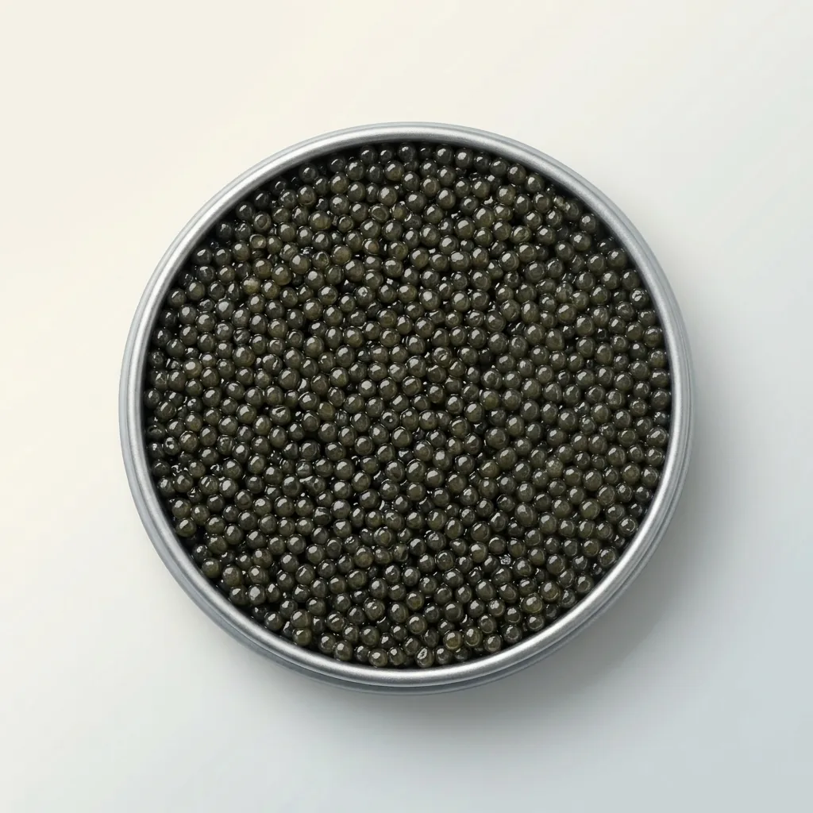
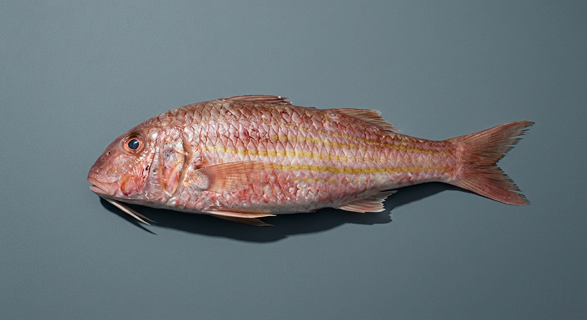
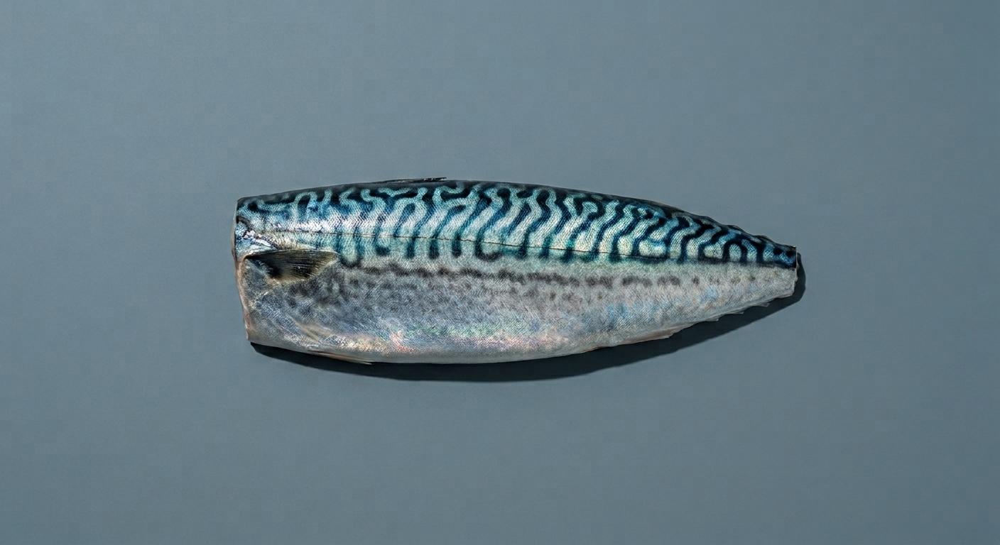

La Collection
Peu de pièces, aucune au hasard
Cette présentation n'est pas un catalogue : chaque pièce retenue l'est pour une raison précise, jamais pour compléter un assortiment.

La pièce phare
Le caviar, la même exigence portée à son sommet.
Affinage Malossol, grain sélectionné lot par lot. La pièce que nous montrons en premier parce qu'elle résume, à elle seule, ce que signifie « sélection » pour nous.

Bar de ligne
Une pièce, pas un lot
Pêché à la ligne, retenu à l'unité — jamais en volume. Une régularité que nous vérifions pièce par pièce, pas sur un échantillon.
Rouget barbet
Une couleur qui ne s'imite pas
Sa robe et ses reflets dorés se ternissent vite : nous ne le retenons que lorsque la fraîcheur est irréprochable, jamais par défaut.


Langoustine
Vivante jusqu'à la dernière étape possible. Une pièce que nous ne proposons que lorsque cette condition est tenue.

Maquereau
La pièce que l'on redécouvre
Trop souvent réduit à un produit courant. Travaillé avec le même soin que les autres pièces de cette page, il n'a plus rien d'ordinaire.
Accès à la collection
Réservée aux maisons partenaires
Cette présentation n'est pas exhaustive. L'accès complet à la collection se fait sur demande de référencement.
Devenir maison partenaire